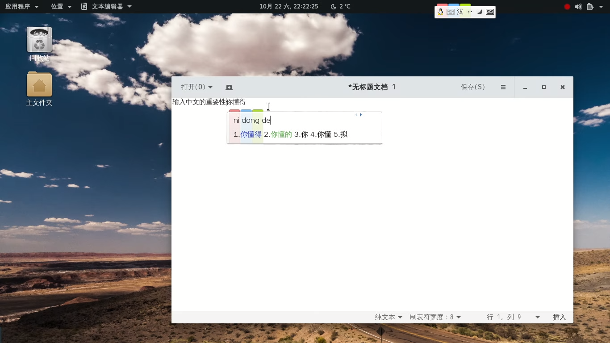

输入法
安装好Debian系统以后不能输入中文是不是很是不爽?Debian默认是没有安装任何输入法的(Gnome桌面环境以后可能会集成ibus输入法),对于中文输入需求的用户来说安装一款适合自己的输入法非常重要
Debian下有很多输入法引擎，您就不能输入中文。流行的输入法引擎包括：
Fcitx
小企鹅输入法，支持：
- fcitx-googlepinyin 谷歌拼音输入法
- fcitx-module-cloudpinyin 云拼音输入法模块，来自搜狗、QQ等的云输入
- fcitx-pinyin 拼音
- fcitx-sunpinyin Sunpinyin拼音输入
- fcitx-rime 中州韵输入法，支持简体和繁体输入
- fcitx-table-wbpy 五笔拼音
IBus
- ibus输入法，支持：
- ibus-googlepinyin 谷歌拼音输入法
- ibus-pinyin 拼音
- ibus-sunpinyin Sunpinyin拼音输入
- ibus-rime 中州韵输入法，支持简体和繁体输入